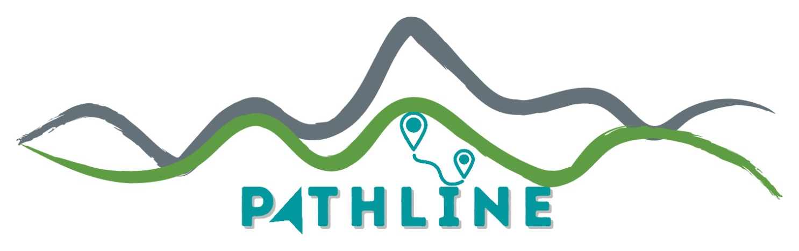
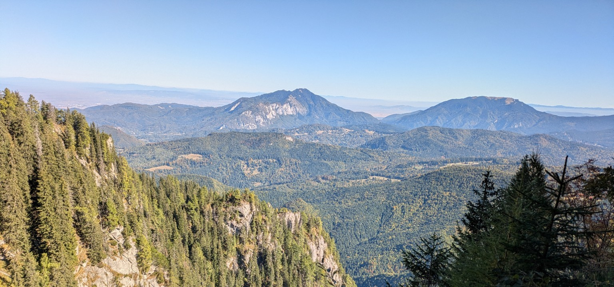

0730 291 229
pathlineadventure@gmail.com
☰ Meniu
Home
Tururi culturale ▾
Vezi toate tururile culturale
Brașov
Sinaia
Sibiu
City Quests ▾
Vezi toate City Quests
Brașov City Quest
Sinaia City Quest
Ture montane
Via Transilvanica
Despre
Contact

PATHLINE
Explorează. Simplu.
▲
Ture montane
Trasee, dificultate și detalii tehnice
→
⌂
Tururi culturale
Brașov, Sinaia și Sibiu
→
◎
City Quests
Explorează orașul prin joc
→
⌁
Via Transilvanica
Experiențe PATHLINE dedicate traseului
→
Nu știi ce experiență ți se potrivește?
Contactează-ne